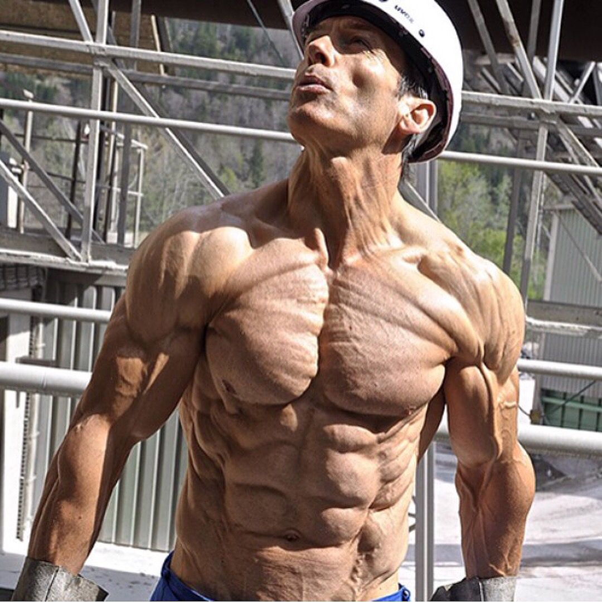

Eten
Bulk

Bulken, bulken doe je om aan te komen zodat je spier op kan bouwen en sterker kan worden. In de gym wordt je namelijk niet sterker als je niet aankomt. Daardoor moet je meer gaan eten. Hoe werkt de bulk? Je gaat meer eten en je elke ochten wegen. Als je dat hebt gedaan kijk je naar het week gemiddelde. Het doel is om elke week een beetje zwaarder te worden. Zodat we ook sterker worden in de gym!
Je vraagt je misschien af wat voor voeding je moet eten. Daar is maar 1 antwoord op namelijk: dierlijke producten. Dierlijke producten is de sleutel tot progressie in de gym.
Cut
De cut, afvallen zodat je beter je spieren kunt aanschouwen. Iets wat niet makkelijk te doen is. Je moet hier namelijk minder gaan eten zodat je elke week minder zwaar wordt.
Heel belangrijk tijdens de cut is extra veel dierlijke eiwitten eten zodat je spierverlies minimaal blijft. Tijdens het afvallen verlies je namelijk altijd spier en kracht. Dus daarom moet je extra veel eiwitten binnenkrijgen!